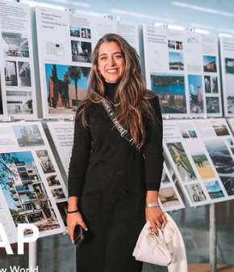

Escuchar
Entender tu manera única de vivir y lo que ofrece el lugar.
Espacios pensados para una forma ÚNICA de habitar, la tuya.
Hablemos de tu proyecto
Creo en una arquitectura que nace de la escucha y la observación.
¿Cómo vivimos? ¿Cómo queremos vivir?
Proyecto desde el encuentro entre persona y paisaje.
La luz, la materia, la vegetación y lo preexistente no se suman al final: son parte indiscutida de las preguntas con las que empieza nuestro proceso.
La docencia e investigación constante en talleres proyectuales y cursos propios construye un conocimiento dinámico que busca correr el límite de lo establecido a través de nuevas preguntas.
Entender tu manera única de vivir y lo que ofrece el lugar.
Explorar posibilidades con luz, materia y paisaje.
Transformar esas ideas en espacios para habitar.
Dos puntos de partida,
la misma forma de trabajar.

Un espacio que se adapte a tu cotidianeidad.
Para vos y quienes comparten tu vida. Una casa nueva, una reforma o ese espacio que querés transformar.
Quiero pensar mi casaConsultar por WhatsApp
Una visión que toma forma.
Para quienes ven una posibilidad en un terreno o un desarrollo. Pensemos juntos su potencial y la arquitectura que puede darle valor.
Quiero pensar mi inversiónConsultar por WhatsAppTe muestro una selección de cuatro obras.
Seleccioná una obra para conocerla.
Un proceso compartido, con etapas claras. En la primera conversación definimos qué necesitás y el alcance del trabajo.
Empezar una conversaciónEn la primera reunión te acercamos un presupuesto fijo, con opciones de pago, que no presenta alteraciones en el tiempo ni por metros cuadrados ni por elección de materiales.
No trabajamos por porcentajes: nuestro trabajo, esfuerzo y dedicación es el mismo en una obra onerosa o de bajo costo.
No hay proyecto sin contexto. Cualquiera sea tu encargo, evaluamos primero el presupuesto y el tiempo disponible, el asoleamiento, el paisaje, tus anhelos, tu vida cotidiana y también la extraordinaria. Así surge una propuesta que abarca la totalidad del terreno y la unicidad de cada uno.
Toda la información obtenida del contexto la volcamos en un modelo digital que podrás recorrer y objetar como si estuvieras dentro.
Desarrollamos toda la documentación necesaria para la ejecución de la obra: desde planos municipales hasta planos de detalle.
Realizamos un cronograma de obra como parte de la dirección, para tomar decisiones asertivas antes del comienzo de la obra y disminuir los contratiempos y los costos una vez iniciada.
Nos aseguramos de que tu anhelo quede como lo imaginamos juntos. Para eso hacemos visitas a obra, disponemos de equipos de trabajo de confianza y certificamos los avances.
Primer premio · Edificio Ocampo · Categoría E: Producción Internacional, Obra Construida.
Segundo premio.
Segundo premio · Edificio Ocampo · Vivienda multifamiliar mayor a tres niveles.
Primer premio · Casa Suburbana · Vivienda PROCREAR.
Tercer premio · Rolling Pavilion · Diorella Fortunati, Andres Milos y Diego Valenzuela · Posgrado de Arquitectura y Tecnología.
Segundo premio · Congreso Latinoamericano de Arquitectura, Taller Integral de Arquitectura · CCCAO, tesis de Diorella Fortunati.
Cycle 5 · 2024–2025.
Best Implemented Project of Residential or Mixed-Use Estate.
Best Implemented Project of Private Residence.
Best Implemented Apartment.
Diorella Fortunati · Arquitecta Desarrolladora.
Diorella Fortunati · Destacada en Arquitecta Proyectista.
Distinción · Edificio Ocampo · Vivienda multifamiliar.
Mención · Casa Sur · Vivienda unifamiliar.
Primera mención · Simulaciones Sincrónicas · Dirección de Obras, Cátedra Robles.
Edificio Ocampo · Vivienda multifamiliar.
Selección.
Selección nacional · Sistemas Materiales · Academia e Investigación.
Casa Laguna · Colección Vivienda, n.º 2: Viviendas Exentas · Bisman Ediciones.
Curso Expresión Material.
Beca completa · Diorella Fortunati · Intercambio de Grupo de Estudio Alemania–Argentina, Rotary Internacional.
Diorella Fortunati.
Las entradas idénticas de Casa Laguna / Golden Trezzini y de In Award Nueva York se muestran una sola vez.
No hace falta tener todas las respuestas. Podemos empezar por una pregunta, un lugar o una idea.
Contame qué estás imaginando. Ya sea tu casa o un proyecto de inversión, el primer paso es escucharte.